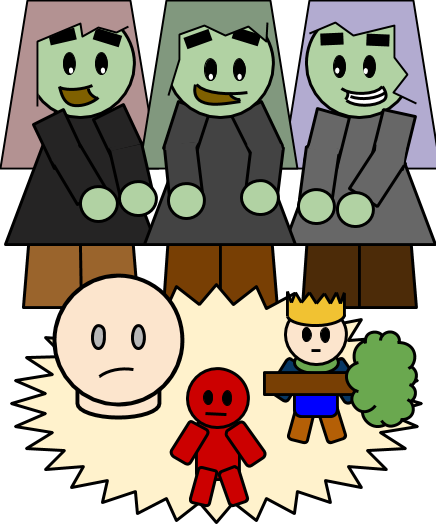

The witches are the very first characters to appear in the play! With Hecate as their leader and a fondness for pranking, you can be certain that these three are always up to no good.
When Macbeth asks the witches if he will become King, the witches do not give him a straight answer. Instead, they show him three apparitions: a severed head, a bloody child, and a royal child holding a tree.
Each apparition tells Macbeth a prophecy that will come true later in the play. After hearing the prophecies, Macbeth becomes convinced that he is invincible; that he is destined to become king. This pride is what leads to Macbeth's death at the end, after it's revealed that the prophecies were all misleading tricks.
Go back